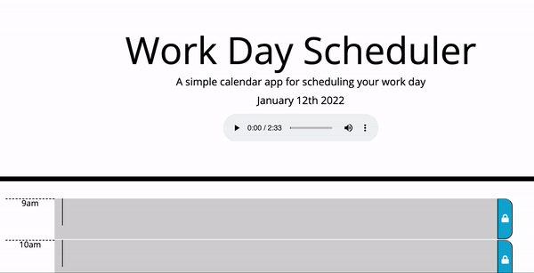
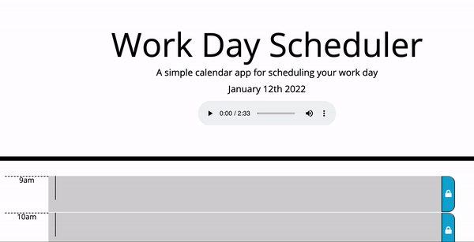
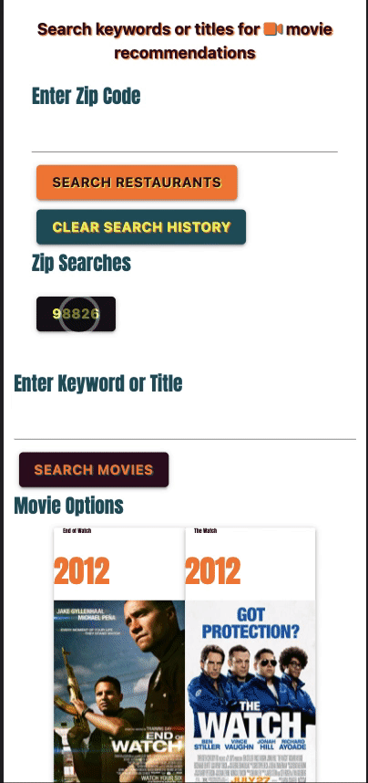
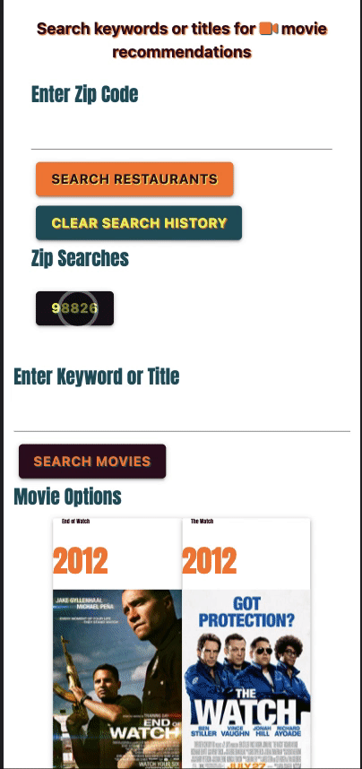

Curiosity-driven web developer passionate about creating a more intuitive and engaging user experience.
I deliver true-to-vision, responsive websites utilizing current best practices in accessibility, SEO, cross-browser consistency and optimization.
I earned my Bachelors in International Business with a concentration in Marketing from the University of South Florida and am currently enrolled in a Full Stack Web Development program at the University of Oregon. I will complete my training at the end of April 2022.

 
 
